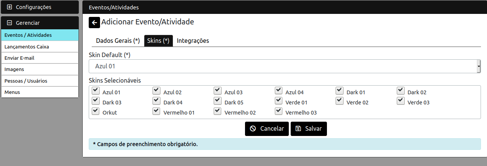
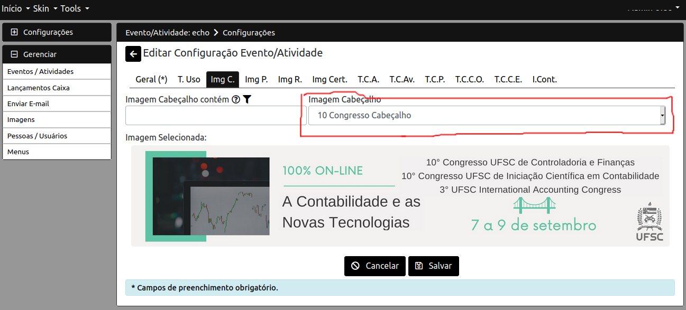

Manual para Gerenciamento dos Eventos
Pré Requisitos:
- Estar logado no site (parte administrativa).
- Seguir as etapas listadas em cada um dos itens de menu.
Criar Novo Evento
Criar Novo Evento/Atividade
Clicar no menu "Eventos/Atividades",
então clicar no botão "+" (Adicionar)
no topo direito da listagem de eventos apresentada.
Preencher os dados
Preencher os dados solicitados. A opção
"Tornar como evento público" deve ser marcada
para que a página do evento seja acessível
publicamente.
Pode se marcar esta opção em outro momento, bastando
clicar em "editar" nas ações disponíveis na listagem
dos eventos.

Skins
Skin é a definição do esquema de cores. Deve-se informar
ao menos 1 que será o padrão ao carregar o site pela
primeira vez, podendo se selecionar um ou mais
esquemas (Skins) entre os disponíveis.
Para testar os skins pode-se utilizar a funcionalidade "Skin"
da página de administração, sabendo assim quais esquemas de cores
deseja-se disponibilizar aos visitantes e usuários
da página do evento.

Integrações
Algumas configurações para permitir integração de
meios de pagamento de inscrições e também alterar
a modalidade padrão de uso do evento (Congresso/Conferência)
para tornar a página do evento em ambiente virtual.
Ativar o Evento
Até o momento o evento ainda está bloqueado, e com
as funcionalidades de configuração (cofigurações diversas)
e gerenciamento bloqueadas. Clicar em ativar "Cadeado Fechado".
Agora o evento pode ser configurado e gerenciado. O ícone
do botão mudou para "Cadeado Aberto" indicando "Desbloqueado",
e já se pode proceder com a utilização das funcionalidades
anteriormente bloqueadas.
Configurar Evento
Selecionar Evento
Na listagem de eventos, clicar em "Configurações"
nas ações do respectivo evento.
Criar Nova Configuração para o Evento
Clicar no botão "+" (Adicionar) no topo direito,
para adicionar nova configuração.
Preencher Dados
Preencher os dados das cargas horárias e intervalos
de registro de autores/avaliadores, participantes
e submissão de trabalhos/artigos.
Criar Termos de Uso
Recomendável criar um "Termos de Uso".
Será mostrado um item de menú no site do evento
caso informado. Este é o termos de uso do
site. O "termos de uso" para a submissão de trabalhos
fica à parte em outra funcionalidade relacionada
aos "Congressos/Conferências".
Cada evento deve ter no mínimo 1 congresso/conferência
(ao qual serão submetidos os trabalhos/artigos),
e cada um deles pode ter um "termos de uso" diferenciado.
Imagem Cabeçalho
Escolher uma imagem para aparecer no cabeçalho
das páginas do evento. Será exibida desde que informada.
Esta imagem deve estar previamente cadastrada na funcionalidade
"Gerenciar >> Arquivos" na parte administrativa.

Imagem Patrocinadores
Escolher uma imagem para aparecer acima da imagem de rodapé
das páginas do evento. Será exibida desde que informada.
Esta imagem deve estar previamente cadastrada na funcionalidade
"Gerenciar >> Arquivos" na parte administrativa.
Imagem Rodapé
Escolher uma imagem para aparecer no rodapé
das páginas do evento. Será exibida desde que informada.
Esta imagem deve estar previamente cadastrada na funcionalidade
"Gerenciar >> Arquivos" na parte administrativa.
Imagem Certificado
Escolher uma imagem para servir de fundo para os certificados
digitais a serem emitidos pela página do evento.
Deve ser informada se o evento estiver habilitado para
gerar certificados (Autores, Avaliadores, Participantes).
Esta imagem deve estar previamente cadastrada na funcionalidade
"Gerenciar >> Arquivos" na parte administrativa.
Template Certificado Autor Trabalhos
Texto template do certificado de "Autor de Trabalhos".
Previamente preenchido com um texto base e as
chaves de substituição aceitas (entre "#{" e "}").
Deve ser informado/alterado se o evento estiver habilitado para
gerar certificados para autores de trabalhos/artigos.
Template Certificado Avaliador Trabalhos
Texto template do certificado de "Avaliador de Trabalhos".
Previamente preenchido com um texto base e as
chaves de substituição aceitas (entre "#{" e "}").
Deve ser informado/alterado se o evento estiver habilitado para
gerar certificados para avaliadores de trabalhos/artigos.
Template Certificado Participante
Texto template do certificado de "Participante".
Previamente preenchido com um texto base e as
chaves de substituição aceitas (entre "#{" e "}").
Deve ser informado/alterado se o evento estiver habilitado para
gerar certificados para participantes.
Template Certificado Comissão Organizadora
Texto template do certificado de "Comissão Organizadora".
Previamente preenchido com um texto base e as
chaves de substituição aceitas (entre "#{" e "}").
Deve ser informado/alterado se o evento estiver habilitado para
gerar certificados para os integrantes da comissão organizadora.
Template Certificado Comissão Executiva
Texto template do certificado de "Comissão Executiva".
Previamente preenchido com um texto base e as
chaves de substituição aceitas (entre "#{" e "}").
Deve ser informado/alterado se o evento estiver habilitado para
gerar certificados para os integrantes da comissão executiva.
Informações de Contato
Informações de Contato para os visitantes/participantes
efetuarem comunicação com os organizadores do evento.
Se informado será criado um item de menu na página
do evento com estas informações.
Ativar a Configuração
Necessário ativar a configuração para que a mesma entre em
utilização/aplicação. Poderá-se criar mais de uma configuração
mas apenas uma poderá ser ativada de cada vez (nunca 2 ativas
ao mesmo tempo).

Adicionar Congresso/Conferência
Selecionar Evento
Na listagem de eventos, clicar em "Congressos/Conferências"
nas ações do respectivo evento.

Criar Novo Congresso/Conferência para o Evento
Clicar no botão "+" (Adicionar) no topo direito,
para adicionar novo congresso/conferência.
Preencher Dados
Preencher os dados gerais como identificação,
formas de apresentação de trabalho, ordem de apresentação
(apresentação visual do congresso/conferência na página do
evento em relação aos demais congressos/conferências do evento),
máximo de autores por trabalho, máximo de trabalhos por autor,
mínimo e máximo de caracteres no resumo, e
regra de aplicação do "máximo de autores por trabalho".
Parâmetros de Avaliação
Informar Peso da nota do trabalho escrito e peso
da nota da apresentação na nota final.
Se não houver apresentação (ou nota de apresentação)
colocar 0 no respectivo campo e 10 para o peso da parte
escrita.
Termos de Submissão
Informar os "termos de uso" para serem aceitos
ao se efetuar uma submmissão de trabalho/artigo
neste respectivo congresso/conferência.
Configurar os Parâmetros do Congresso/Conferência
Configurar as "Areas Temáticas" para submissão de trabalhos/artigos,
as "Configurações Arquivos" para submissão de trabalhos/artigos,
e "Pontos Avaliação Trabalho" para a avaliação dos trabalhos/artigos
que serão submetidos.
Estas funcionalidades serão tratadas em sub-itens do
item de menu atual.
Categorias Inscrição
É necessário criar ao menos 1 categoria
de inscrição no evento para permitir
o registro no evento de "Participantes".
Também somente após este processo e ter
definido 1 categoria de inscrição será
habilitada a funcionalidade de definir/configurar
os meios de pagamento.
Selecionar Evento/Atividade
Na listagem de eventos clicar em "Categorias Inscrição".
Criar Nova Categoria Inscrição
Clicar no botão "+" (Adicionar)
no topo direito da listagem de categorias de inscrição apresentada.
Preencher Dados
Informar a identificação da categoria, valor (R$),
data limite para obter desconto, % de desconto, e % de desconto
para avaliador de trabalhos.
O % de desconto para avaliador de trabalhos
só é válido para quem houver feito inscrição como
"Autor e Avaliador", ou "Avaliador", e efetivamente houver
avaliado um ou mais trabalhos (Avaliação corretamente finalizada).
O % de desconto para avaliador de trabalhos
é calculado sobre o valor obtido após o
"% de desconto" ser aplicado(se a inscrição for feita
dentro da data limite é aplicado
para inscrições na respectiva categoria).
O % de desconto para avaliador de trabalhos
é aplicado sem considerar data da inscrição.
Certificados Customizados
Caso haja necessidade podem ser criados
certificados especiais que serão atribuídos
a determinados participantes, conforme méritos
não previamente previstos pelo sistema.
Selecionar Evento/Atividade
Na listagem de eventos clicar em "Certificados Customizados".
Criar Novo Certificado Customizado
Clicar no botão "+" (Adicionar)
no topo direito da listagem de certificados customizados apresentada.
Preencher os Dados
Informar identificação, horas padrão, e template (texto do certificado).
No momento de se atribuir o certificado a algum participante
poderá ser atribuido um número de horas diferente
do padrão. Caso não se informe um valor maior que 0,
então o valor "horas padrão" é utilizado.
O template pode ser copiado dos templates de certificados
da configuração do evento e então fazer modificações (questão das chaves
de substituição lá descritas).
Ver item de menu "1.1 - Configurar Evento".
Configurações AWS S3
Tópico Técnico. Para leigos
deve ser interpretado como conteúdo
explicativo da razão de existir a funcionalidade.
Configuração para definição do armazenamento dos arquivos
das submissões do evento na nuvem da AWS.
Em caso que se queira usar uma conta própria da AWS
para o armazenamento então pode-se realizar esta configuração.
Do contrário os mantenedores do sistema realizarão
a configuração padrão.
Deve-se ter uma configuração destas ativa para habilitar
o funcionamento das submissões de trabalhos/artigos.
Apenas uma destas configurações estará ativa para o evento
(nunca 2 simultâneamente - verificação do sistema).
Selecionar Evento/Atividade
Na listagem de eventos clicar em "Configurações AWS S3".
Criar Nova Configuração AWS S3
Na listagem de configurações s3 apresentadas, clicar em
"+" (Adicionar) no topo direito.
Preencher os Dados
Preencher os campos do formulário
de acordo com os dados da configuração
da conta S3 da AWS. Os campos
"Key" e "Secret" serão armazenados
criptografados no banco de dados.
Bloqueio de Alteração/Exclusão
Após a primeira submissão de trabalho/artigo gerar
upload de arquivo para esta configuração a mesma
passará a ficar bloqueada para toda e qualquer alteração,
por finalidade de segurança.
Deste momento em diante todas as demais submissões
estarão utilizando esta configuração.
Gerenciar Avaliações Trabalhos
Ao Acessar a Funcionalidade "Trabalhos Submetidos"
na Coluna "Ações" da Lista de Eventos, será apresentada a listagem de
trabalhos submetidos ao evento em questão, separados em diversas
abas, cada uma relativa à uma filtragem relativa ao "status"
ou "progresso" do trabalho/artigo no processo de avaliação.
Informações do Trabalho/Artigo
As informações respectivas ao trabalho podem ser acessadas a qualquer
momento, independentemente do progresso da avaliação.
Estas informações ficam disponíveis em uma janela sobreposta ao
clicar em "Detalhes" (ícone "i").
Alterar/Incluir Autores
Além de visualizar as informações do trabalho/artigo,
é possível alterar/incluir/remover autores
do trabalho/artigo, na aba "Autores". O primeiro autor
não pode ser alterado/excluído pois é o responsável
da submissão (efetuou a submissão).
Alterar/Incluir Arquivos
Além de visualizar as informações do trabalho/artigo,
É possível alterar/incluir/remover arquivos
do trabalho/artigo, na aba "Artigos".
Acompanhar Confirmações de Submissão
Verificar e acompanhar as submissões a fim de garantir que todos
os autores completem corretamente o processo de submissão.
A lista na primeira aba "Aguardando Submissão" contém os trabalhos que
os autores não completaram o processo de submissão.
Se julgar necessário pode ser utilizada a função de envio de email
para contactar os respectivos autores.
É possível definir autores e alterar/incluir/excluir arquivos
se for necessário, basta clicar em "i" (Detalhes) e
selecionar a aba "Autores", ou a aba "Arquivos".
Alterar/Incluir Autores
Além de visualizar as informações do trabalho/artigo,
é possível alterar/incluir/remover autores
do trabalho/artigo, na aba "Autores". O primeiro autor
não pode ser alterado/excluído pois é o responsável
da submissão (efetuou a submissão).
Alterar/Incluir Arquivos
Além de visualizar as informações do trabalho/artigo,
É possível alterar/incluir/remover arquivos
do trabalho/artigo, na aba "Arquivos".
Confirmar Submissão
Caso o responsável pela submissão não efetue
a "Confirmação de Submissão", pode ser feita esta
ação clicando no botão "Confirmar Submissão".
É necessário que tenham sido adicionados os arquivos
obrigatórios.
Definir Avaliadores
A primeira ação a realizar após os autores completarem corretamente
o processo de submissão é definir os avaliadores.
Os trabalhos que se deve realizar esta ação ficam na lista
"A definir avaliadores". Deve-se definir um ou mais avaliadores.
Após isso deve-se liberar o trabalho para os respectivos avaliadores
realizarem a avaliação. Esta ação efetua-se clicando no botão
"Autorizar início das avaliações". Ao confirmar esta ação o trabalho
sai da lista atual e vai para a lista de trabalhos "Em avaliação".
Caso necessário seja, redefinir ou adicionar um avaliador
pode-se ir na lista dos trabalhos "Em Avaliação" e colocar o respectivo
trabalho de volta a esta lista, podendo assim efetuar
alterações de avaliador(es).
Contudo deve-se garantir de fazer novamente o processo de colocar
"Em Avaliação" o respectivo trabalho.
Os avaliadores só podem efetuar a avaliação dos trabalhos a eles atribuídos
se o respectivo trabalho estiver na situação "Em avaliação".
Selecionar o trabalho/artigo
Na listagem de trabalhos, clicar em "Definir Avaliadores", para
selecionar o trabalho/artigo a atribuir os avaliadores.
Adicionar Avaliador
Clicar no botão "+" (Adicionar) no topo direito.
Selecionar e Atribuir por Area Temática e Carga de Trabalho
Os avaliadores estarão classificados em 3 listas em relação à suas preferências
de avaliação (area e subarea temática), em relação à area a subarea temática
do artigo/trabalho em questão. Entre colchetes estará sinalizado
o número de trabalhos que tal avaliador já está atribuído como avaliador.
Este número visa facilitar melhor distribuição de carga de trabalho
entre os avaliadores, conforme possível.
Dados Gerais, Autores e Avaliadores
Clicar no botão "Detalhes da Submissão" no topo direito
para ver alguns dados da submissão para ajudar
no processo.
Detalhes da Submissão
Aqui pode-se ver os dados gerais, os autores
e quem são os avaliadores da submissão.
O sistema bloqueia que um avaliador seja adicionado
duas vezes na mesma submissão (e dispara Mensagem Alerta).
Também não são disponibilizados para ser selecionados
e adicionados como avaliadores, os avaliadores
que eventualmente sejam autores do respectivo
trabalho/artigo. Ainda assim pode-se utilizar
estes dados para orientar-se.
Acompanhar, Aprovar e Rejeitar
Após colocar os trabalhos "Em Avaliação", os avaliadores
estarão liberados à realizar as respectivas avaliações dos
trabalhos. Quando o avaliador "Finalizar" a avaliação, marcando
como tendo finalizado-a, os indicadores na coluna
"Avaliações Finalizadas" serão atualizados para o respectivo
trabalho, de forma a sinalizar quantas avaliações já
estão prontas entre o total de avaliações. Por exemplo "0/3",
"1/3", "2/3", "3/3", "1/2" ... sendo o número depois da barra
o total de avaliadores definidos.
Pode-se utilizar a funcionalidade de envio de emails para contactar
os avaliadores (Todos ou apenas de um trabalho), e realizar
comunicações quando necessário.
A partir do momento que existir uma avaliação já confirmada, pode-se
efetuar a ação "Aprovar", que moverá o trabalho para a lista "Trabalhos Aprovados",
ou a ação "Reprovar", movendo o trabalho para a lista dos "Trabalhos Reprovados".
É necessário observar que tais ações bloqueiam a avaliação
por parte dos avaliadores. Por exemplo um avaliador que falte apenas confirmar
a avaliação não poderá fazê-lo mais, nem mesmo editar a respectiva avaliação
deste trabalho.
Ambas ações podem ser desfeitas, bastando ir na lista respectiva e clicar em
"Desfazer Aprovar Trabalho", ou "Desfazer Reprovar Trabalho", de modo
que o respectivo trabalho voltará a lista "Em Avaliação".
As "Avaliações" ou "Notas" que cada avaliador atribuiu ao trabalho/artigo
estarão acessíveis no botão "Ver Avaliações" (ícone "estrela").
Aprovar ou Rejeitar(Reprovar)
Na listagem de trabalhos clicar em "positivo/Dedão pra cima"
para aprovar ou "negativo/Dedão pra baixo" para rejeitar
o respectivo trabalho.
Estas ações só estarão habilitadas quando ao menos um dos
avaliadores houver terminado sua avaliação (avaliação Finalizada).
Depois de realizar esta ação os demais avaliadores que não tenham
finalizado as avaliações estarão impedidos de fazê-lo.
Trabalho Reprovado/Rejeitado
Termina aqui a jornada do respectivo trabalho/artigo, no
evento e congresso/conferência em questão.
Trabalho Aprovado
Para os trabalhos que forem "Aprovados", é necessário indicar quais
deles foram apresentados. Para isto existe na lista "Aprovados", uma ação
"Marcar como Apresentado". Esta ação moverá o trabalho para a lista
de "Trabalhos Apresentados".
Apenas quando o trabalho estiver na lista "Apresentados", poderá ser possível
indicar qual(is) de seus autores foram apresentadores,
e atribuir nota de apresentação.
É necessário marcar os respectivos apresentadores, para que os mesmos tenham
acesso ao "Certificado de Apresentador de Artigos", a ser gerado pelo sistema.
Esta funcionalidade será tratada em detalhes no próximo item de menu
"Atribuição de Apresentadores e Nota de Apresentação".
Atribuição de Apresentadores e Nota de Apresentação
Na lista de trabalhos "Aprovados", o uso da funcionalidade
"Definir Apresentadores", possibilita marcar quais dos
autores apresentaram o trabalho/artigo, qual a forma de apresentação
(Quando for possível a forma de apresentação mudar durante o processo),
e atribuir nota de apresentação (Quando o peso for maior que 0 para apresentação).
Selecionar Trabalho/Artigo
Na listagem de trabalhos/artigos clicar no botão "Marcar Apresentadores".
Tipo de Apresentação, Nota Apresentação e Apresentadores
É possível alterar o Tipo de Apresentação,
informar/alterar a Nota de Apresentação e
marcar quais dentre os autores apresentaram o trabalho/artigo (Apresentadores).
Marcar Apresentadores
Os autores marcados como apresentadores aparecerão
como apresentadores do respectivo trabalho/artigo
nos anais do evento. Também eles terão o direito
a emitir o certificado de apresentação de trabalho.
Informar/Alterar Nota de Apresentação
Ao informar a nota de apresentação, ao clicar em confirmar
será automaticamente re-calculada a média final do trabalho/artigo.
Este cálculo se baseia nos pesos e notas das avaliações escrita e
apresentação.
Alterar Tipo de Apresentação
Pode acontecer de o tipo de apresentação realizada seja
diferente do originalmente informado no momento
da submissão do trabalho/artigo. Neste caso é possível
realizar o ajuste necessário (A forma de apresentação será
visível nos anais).
Esta alteração é possível se o o congresso/conferência
ao que o trabalho/artigo estiver submetido permitir
mais de um tipo de apresentação.